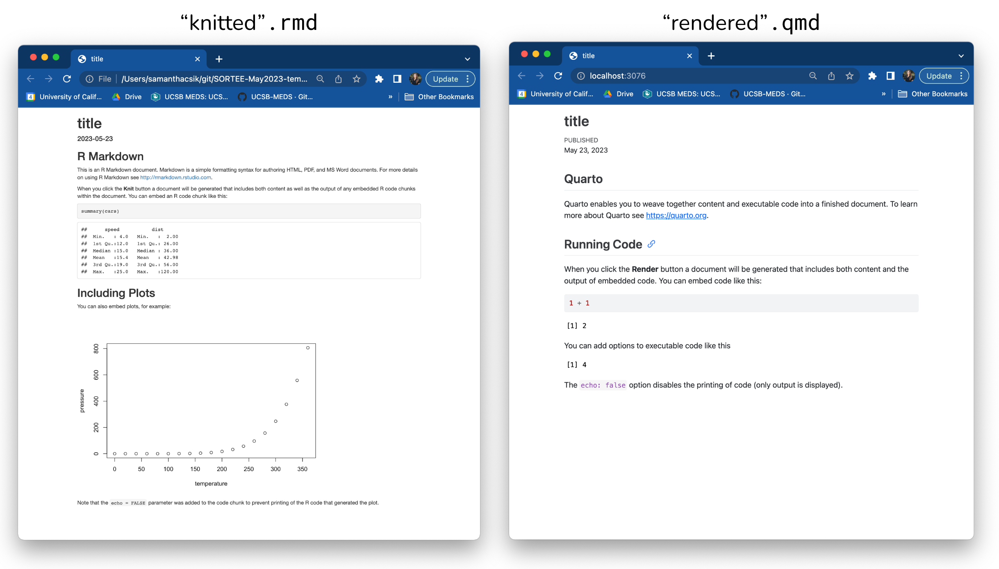

What is Quarto?

Quarto คือ publishing system สร้างบน Pandoc ที่ผู้ใช้สามารถสร้างเอกสาร โดยใช้ภาษา R Python Julia และ ObservableJS (และในอนาคต อาจจะรวงรับมากกว่านี้)

Art by Allison Horst. Be sure to check out the rest of Allison’s seriously cute Quarto penguin art in the #rstudioconf2022 keynote talk, Hello Quarto, by Julie Lowndes & Mine Çetinkaya-Rundel!
สำหรับผู้ใช้อาร์รู้จักกับ RMarkdown เพื่อรวบเนื้อหา(ตัวหนังสือ) code และ output และ รวมเรียกว่า “knitted” documents แต่ Quarto ทำได้เหมือน RMarkdown แต่ได้ได้มากกว่า อีกทั้ง ยังใช้ได้กับภาษาอื่น ๆ ได้
สำหรับคนใช้หรือคุ้นเคยกับ RMarkdown แล้วจะพบว่าไฟล์ RMarkdown (.rmd) และ Quarto Markdown (.qmd) มีส่วนคล้ายกัน:
metadata และ configurations จะอยู่ในไฟล์ YAML (ตาม
---ที่อยู่บนบนของเอกสาร)โค้ด จะเขียนอยู่ในส่วนที่เรียกว่า code chunks
สำหรับ อาร์แล้ว จะอยู่ใน
```{r} 1+1 ```ตัวอักษร ที่เป็นส่วนของเนื้อหา นั้น เขียนอยู่ในส่วนของ body
.rmd vs. .qmd files
They also look pretty similar when knitted/rendered. Below is a side-by-side comparison of a knitted .rmd file and a rendered .qmd file (both as .html files):

สำหรับ .rmd files Knit ส่วน .qmd files Render เพื่อแปลงไปเป็นเอกสารที่กำหนดไว้ หรือ output เป็นไฟล์ .html เป็นต้น

อ่านเพิ่มเติมได้ Quarto’s documentation เพื่อสร้าง document websites blogs books slides และอื่น ๆ